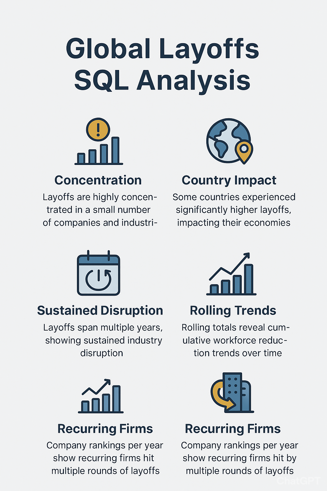
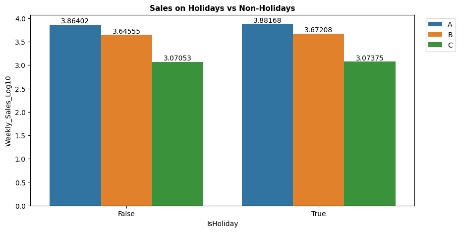
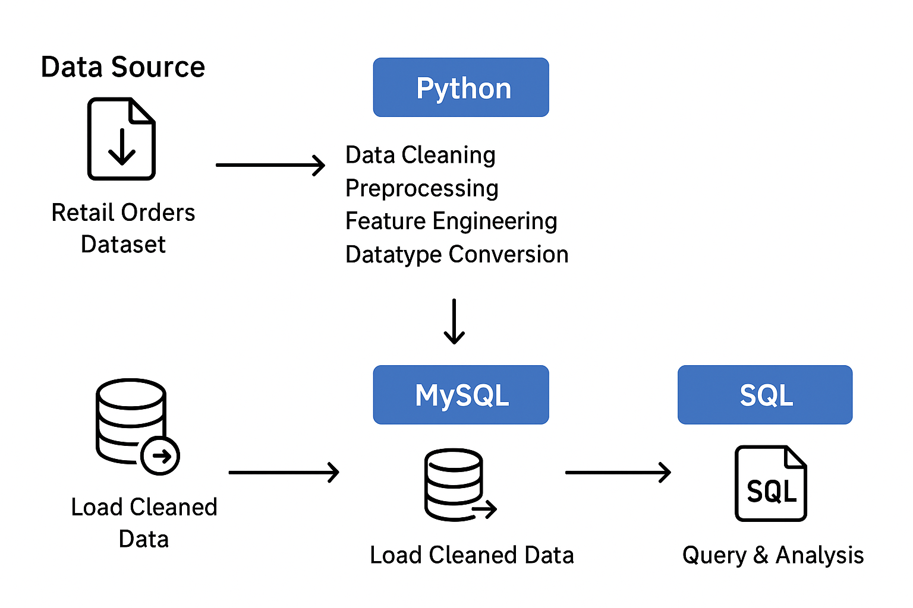
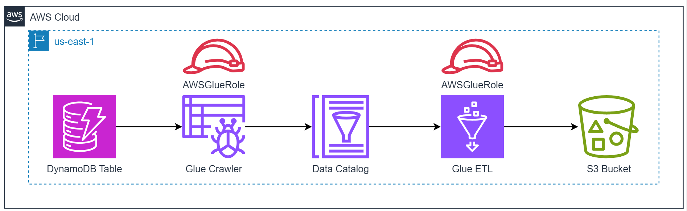

This project began with a question, how have drug-related deaths shaped the U.S. over the past decade?
Using Python, I cleaned and transformed thousands of public health records, uncovering patterns hidden within raw data. The processed datasets were modeled and aggregated in Snowflake, where I built summary views capturing yearly, demographic, and substance-level trends. From there, I brought the story to life in Tableau by designing an interactive dashboard that visualizes the sharp rise of fentanyl-related deaths between 2014 and 2021, the slight decline after 2022, and the disproportionate impact on adults (7,876 deaths) and young adults (3,341 deaths). The dashboard is embedded directly into this portfolio, inviting you to interact with the visualizations below. You can explore trends by age group filters:
Youth (0–17 years),
Young Adults (18–35 years),
Adults (36–55 years) and
Older Adults (56+ years).
Each filter reveals how the crisis affects different generations across time and geography.
Every design choice, from red-accented visuals to a clear narrative flow, balances empathy with insight.
This project reflects my passion for transforming data into stories that drive awareness and action in public health.
This project analyzes FDA drug shortage data to understand why shortages occur, which clinical areas are most affected, how long shortages persist, and which root causes generate the highest operational workload.
Using Tableau, I built an interactive dashboard combining KPI metrics, root-cause analysis, therapeutic concentration, and shortage duration timelines to evaluate both volume-driven and effort-intensive risks within the U.S. drug supply chain.
The analysis shows that a small number of poorly defined root causes account for a disproportionate share of shortage records and operational follow-ups.
Drug shortages are concentrated in critical therapeutic areas such as cardiovascular,
endocrine, and neurological treatments. Timeline analysis further reveals that several shortages remain unresolved for multiple years,
indicating chronic supply-chain failures rather than temporary disruptions. For better interactive experience with the dashboard please click here

I analyzed global layoff data using SQL to uncover where, when, and how workforce reductions occurred across companies, industries, and countries. The analysis revealed that layoffs were highly concentrated in a few firms and sectors, with recurring patterns over multiple years and regions. These insights help businesses, policymakers, and investors anticipate risks, design recovery strategies, and make more informed decisions.

I developed a Walmart sales forecasting model to tackle the challenge of predicting weekly sales across multiple stores and departments, factoring in holidays, promotions, and economic conditions. By combining data cleaning, exploratory analysis, and machine learning (Random Forest), I uncovered key drivers of sales such as seasonality, store size, and promotions. The result was improved forecasting accuracy and actionable business insights to optimize inventory, promotions, and strategic planning.

I built an end-to-end pipeline to extract, clean, and transform retail order data, then integrated it into MySQL for advanced SQL analysis. The analysis revealed key business insights such as top revenue-generating products, regional sales differences, seasonal demand patterns, and emerging profitable sub-categories. These insights can drive smarter inventory planning, localized marketing, and growth-focused product strategies. This project demonstrates how raw transactional data can be transformed into strategic insights that drive real business decisions. From technical implementation (Python, Pandas, MySQL) to analytical storytelling, the workflow connects data engineering with business intelligence. Click "view code" below to see business insights.

Organizations often struggle to move raw, unstructured data from operational databases into a clean, analytics-ready format. Manual ETL processes are slow, error-prone, and not scalable for real-time decision-making. Built a serverless ETL pipeline using AWS Glue, DynamoDB, and S3. The solution automated schema discovery, transformed raw operational data, and stored analytics-ready data in S3. This streamlined data integration process reduced manual effort and enabled scalable reporting and business insights.

Donec eget ex magna. Interdum et malesuada fames ac ante ipsum primis in faucibus. Pellentesque venenatis dolor imperdiet dolor mattis sagittis magna etiam.

Donec eget ex magna. Interdum et malesuada fames ac ante ipsum primis in faucibus. Pellentesque venenatis dolor imperdiet dolor mattis sagittis magna etiam.